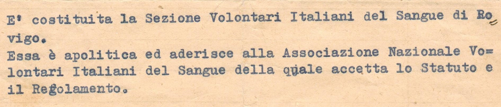

Il Sangue
Il sangue è l'intermedio indispensabile tra le cellule del nostro corpo e l'ambiente che ci circonda. Esso infatti reca alle cellule le sostanze alimentari e l'ossigeno ed inoltre elimina le sostanze di rifiuto prodottesi nell'organismo. Il sangue circola in un sistema di canali o vasi, distinti in arterie, vene e capillari ed è sospinto dal cuore, che funziona come una pompa aspirante e premente.

La composizione
Il sangue è un tessuto composto per il 55% circa da un liquido chiamato plasma e per il restante 45% principalmente da tre specie di elementi cellulari:
- - i globuli rossi
- - i globuli bianchi
- - le piastrine
esso si distingue in arterioso e venoso; l'arterioso di colore rosso vivo, è ricco di ossigeno, il venoso, di colore rosso cupo, è carico di anidride carbonica.
Il Plasma
È prevalentemente formato da acqua che mantiene in sospensione proteine, sostanze minerali e sostanze ottenute dalla digestione degli alimenti. Raccoglie le sostanze di rifiuto, mantiene costante il volume del sangue attraverso i FATTORI di coagulazione (ad esempio VII, VIII, IX) ed il Fibrinogeno.
Globuli rossi
Nell'uomo sono da 4 a 5,8 milioni per millimetro cubo, trasportano l'ossigeno prelevato negli alveoli polmonari e sono prodotti (come anche i globuli bianchi e le piastrine) a partire da cellule indifferenziate presenti nel midollo osseo, dette cellule staminali.
Globuli bianchi
Nell'uomo sono da 4.500 a 10.500 per millimetro cubo ed appaiono al microscopio incolori e trasparenti, hanno il compito di assimilare e distruggere i batteri o altri corpuscoli estranei e dannosi all'organismo. Vengono fabbricati nella milza, nelle ghiandole linfatiche e nel midollo osseo.
Piastrine
Nell'uomo sono da 150 a 400 mila per millimetro cubo, hanno parte attiva nell'importante fenomeno di coagulazione del sangue in caso di ferite od emorragie. Sono dei frammenti di cellule prodotte dal midollo osseo.
I gruppi sanguigni
In base a particolari sostanze presenti sulla superficie dei globuli rossi il sangue si differenzia in 4 tipi fondamentali:
- - A
- - B
- - AB
- - 0 (zero)
Ognuno di questi gruppi è definito "positivo" o "negativo" dalla presenza o meno del fattore "RH". Sul territorio italiano sono così suddivisi: 40% gruppo 0; 36% gruppo A; 17% gruppo B; 7% gruppo AB; mentre l'85% della popolazione viene definita RH+ ed il 15% RH-.
Torna suIdoneità
Gli esami medici da effettuare gratuitamente al centro trasfusionale per poter essere abilitati alla donazione di sangue.

Sospensioni
In base al DM 2 novembre 2015 del Ministero della Salute "Disposizioni relative ai requisiti di qualità e sicurezza del sangue e degli emocomponenti" si elencano di seguito le cause di sospensione dalla donazione con i relativi periodi di fermo.

Principali motivi di sospensione:
- - Trasfusione di emocomponenti o somministrazione di emoderivati (sieroterapia): 4 mesi.
- - Spruzzo delle mucose con sangue, lesioni da ago, tagli con strumenti contaminati: 4 mesi.
- - Esame endoscopico con strumenti flessibili (gastroscopia, colonscopia, artroscopia, laringoscopia, isteroscopia): 4 mesi.
- - Tatuaggi, body piercing, foratura delle orecchie: 4 mesi.
- - Agopuntura se non eseguita da professionisti qualificati con ago usa e getta: 4 mesi.
- - Comportamenti sessuali a rischio di malattie infettive: 4 mesi.
- - Intervento chirurgico maggiore (anestesia generale): 4 mesi.
- - Intervento chirurgico minore (es. cisti, lipomi..): 1 mese.
- - Cure odontoiatriche:
Detartrasi: 48 ore.
Estrazione dentaria, devitalizzazione, implantologia: 1 settimana dalla completa guarigione. - - Gravidanza:
6 mesi dopo il parto.
6 mesi dopo aborto. - - Trapianti di tessuti o cellule di origine umana: 4 mesi.
- - Trapianti di cornea, sclera dura madre: non idoneo.
- - Vaccinazioni:
Bcg, antivaiolo, antipolio(orale), antimorbillo, antiparotite, antirosalia, antifebbre gialla: 4 settimane.
Epatite B, rabbia(profilassi), tetano, difterite, febbre tifoide e paratifoide, colera, febbre delle montagne rocciose, influenza, poliomelite, peste: 48 ore se asintomatico. - - Mononuscleosi: 6 mesi dalla completa guarigione.
- - Toxoplasmosi: 6 mesi dalla completa guarigione.
- - Brucellosi, osteomielite, febbre Q, tubercolosi: 2 anni dalla completa guarigione.
- - Febbre reumatica: 2 anni dalla la cessazione dei sintomi in assenza di cardiopatia cronica.
- - Febbre superiore 38°: 2 settimane dalla la cessazione dei sintomi.
- - Affezioni di tipo influenzale: 2 settimane dalla la cessazione dei sintomi.
- - Herpes zoster(fuoco di S. Antonio): 3 mesi dalla guarigione.
- - Fratture in atto: Riammissione dopo completa guarigione.
Malaria:
- 1- Soggetti che hanno vissuto per un periodo di 6 mesi o più (continuativi) in zona endemica in qualsiasi momento della loro vita:
- - Questi soggetti non possono donare fino a quando non venga effettuato uno specifico test immunologico, con esito negativo, in quanto a rischio di essere diventati portatori asintomatici del parassita mnalarico.
- - Devono essere sospesi dalle donazioni per almeno 6 mesi dall'ultimo soggiorno di qualsiasi durata in zona ad endemia malarica.
- - Possono essere accettati come donatori se risulta negativo un test immunologico per la ricerca di anticorpi antimalarici eseguito almeno 6 mesi dopo l'ultima visita in area endemica malarica.
- - Se il test risulta ripetutamente reattivo, il donatore è sospeso per 3 anni; successivamente può essere rivalutato e accettato per la donazione se il test risulta negativo.
- 2- Soggetti che hanno sofferto di malaria, soggetti che hanno sofferto di episodi febbrili non diagnosticati compatibili con la diagnosi di malaria durante un soggiorno in area ad endemia malarica o nei 6 mesi successivi al rientro:
- - Devono essere sospesi dalla donazione per almeno 6 mesi dalla cessazione dei sintomi e dalla sospensione della terapia.
- - Possono essere accettati come donatori se risulta negativo un test immunologico per la ricerca di anticorpi antimalarici eseguito almeno 6 mesi dopo la cessazione dei sintomi e la sospensione della terapia; se il test risulta ripetutamente reattivo, il donatore è sospeso per 3 anni;
successivamente può essere rivalutato e accettato per la donazione se il test risulta negativo. - 3- Tutti gli altri soggetti che hanno visitato un'area ad endemia malarica e che non hanno sofferto di episodi febbrili o di altra sintomatologia compatibile con la diagnosi di malaria durante il soggiorno o nei 6 mesi successivi al rientro:
- - Possono essere accettati come donatori se sono passati almeno 6 mesi dall'ultima visita in un'area ad endemia malarica e se risultano negativi ad un test immunologico per la ricerca di anticorpi anti-malarici.
- - Se il test risulta ripetutamente reattivo, il donatore è sospeso per 3 anni; successivamente può essere rivalutato e accettato per la donazione se il test risulta negativo.
- - Se il test non viene effettuato il soggetto può donare se sono passati almeno 12 mesi dall'ultima visita in un'area ad endemia malarica.
- I test e i periodi di sospensione possono essere evitati in caso di donazione di solo plasma da avviare alla produzione industriale di farmaci emoderivati.
Malattie tropicali:
- - 6 mesi dal rientro da un viaggio in aree tropicali; valutare lo stato di salute del donatore con particolare attenzione a episodi febbrili dopo il rientro e le condizioni igienico-sanitarie ed epidemiologiche della zona in causa.
- - Viaggi in paesi al di fuori delle aree tropicali dove è segnalata la presenza di malattie tropicali:
si applica un periodo di sospensione stabilito sulla base della specifica malattia infettiva presente (vedi elenco Paesi nel mondo anno 2012).
Farmaci:
- - Antiacidi, omeprazolo e derivati, antispastici (es. Buscopan), procinetici (es. Levopraid), acidi biliari (es. Deursil), lassativi, carbone vegetale, fermenti lattivi: idoneo.
- - Eradicazione Helicobacter P. : sospensione 15 giorni dal termine della terapia.
- - Antibiotico topico intestinale (es. Normix): sospensione 15 giorni dal termine della terapia.
- - Vitamine, integratori, sali minerali, Aa (es. carnitina): idoneo.
- - Statine, fibrati per dislipidemie: idoneo.
- - Ferro, vitamina B12, folati: idoneo.
- - Eritropoietina: non idoneo.
- - Calcieparina: 15 giorni, valutazione secondo patologia.
- - ASA (aspirinetta): 5 giorni.
- - Fans (Oki, Aulin, Brufen): 5 giorni.
- - Antiemorragici (es. Tranex): se occasionale, idoneo.
- - Vasoprotettori (es. Venoruton): idoneo.
- - Antiaritmici: non idoneo.
- - Immunoterapia per allergie: 72 ore.
AVIS ROVIGO, dal 1953 solidarietà e impegno "sempre, ovunque, subito"
Le storie dei donatori Avis e di chi riceve il sangue camminano insieme da più di 60 anni a Rovigo: si cammina insieme senza riconoscersi lungo la strada, ma vivendo il senso della gratitudine mentre il tempo passa e chi dona – come chi riceve – apprezza ogni giorno che vive.
Oggi l'Avis comunale di Rovigo conta oltre ai 63 anni d'età anche 1.605 donatori effettivi al 31 dicembre 2015, che hanno permesso la raccolta di 3.184 donazioni nel corso dell'anno passato.
Tutto è iniziato il 4 luglio 1953. È la data sull'atto costitutivo dell'associazione e a sottoscriverlo con l'avvocato Beltrame di Monselice, incaricato dall'Avis nazionale, furono 29 fondatori, presenti di persona o per delega: P. Baratella, Pino Barion, don Ostilio Bego, Antonio Bolognesi, Italo Boscolo, Saverio D'Amico, Maurizio Fabbri, Pietro Fogagnollo, Paolo Furlanetto, Egidio Gabrielli, Antonio Mercusa, don Gervasio Passadore, Primo Pastorelli, Francesco Pavarin, Antonio Raimondi, Emanuele Raimondi, Giovanni Raisa, Aldo Romagnoli, Dante Schiavo, Giancarlo Stevanin, Antonio Sturaro, Tiziano Tentarelli, Arrigo Vernizzi, Nestore Veronese, Romano Volpato, Pompeo Bacchetti, Giovanni Silvestri, Giovanni Soattin, Lia Soattin. Erano presenti anche il professor Antonio Borghero, direttore dell'ospedale civile di Rovigo e presidente del Comitato provinciale, e in rappresentanza dell'Avis l'avvocato Angelo Schiesari.
Tutto era già cominciato, però, qualche mese prima.
Un gruppo di amici aveva organizzato diversi incontri nei locali della parrocchia di San Francesco, a Rovigo. Volevano fare un'associazione per dare aiuto al prossimo donando il sangue. Cominciarono allora Aldo Romagnoli, l'avvocato Italo Boscolo, il dottor Paolo Furlanetto, l'ingegner Mercusa, la signora Silvana Rossi, insieme al professor Borghero e al dottor Riccardo Morsica, presidente dell'associazione fino al 1960. Cominciarono da una stanza di Palazzo Roncale, che gli era stata concessa in affitto, al canone di 1 lira l'anno, dalla Cassa di Risparmio.
Nel 1953 i donatori dell'Avis di Rovigo erano 40 e le donazioni furono 13. Per far conoscere e far crescere l'associazione, i fondatori non restavano fermi nel capoluogo e andavano ad Adria, Badia Polesine, a Castelmassa e ad Ariano.
Piano piano, l'Avis si diffuse in tutto il Polesine. Contava 130 iscritti nel 1955, quando attraverso un contributo dell'allora Ministero della Sanità fu possibile acquistare il materiale per l'apertura di un centro trasfusionale.
In una stanza del reparto di Chirurgia dell'ospedale civile, in Via Badaloni, entrarono una centrifuga da provette, un lettino per i prelievi, un'emoteca, un frigorifero con i flaconi di antisieri per determinare il gruppo sanguigno e l'Rh, un tavolo e alcune sedie. Poi il centro trasfusionale si spostò nel laboratorio di analisi, e infine nel reparto di Medicina, dove il professor Cavazzuti rinunciò al proprio studio. Il centro trasfusionale era aperto giorno e notte, grazie a turni continuativi di 36 ore del personale infermieristico. Nel 1957, le donazioni (479) erano già più che raddoppiate dalle 203 del 1955.
Nel 1958, realizzando un'idea del dottor Morsica, era arrivata anche l'autoemoteca che raccoglieva le donazioni andando di paese in paese. L'acquisto di un mezzo mobile per la raccolta del sangue fu possibile grazie a sottoscrizioni e contributi, offerti dalle banche e dall'allora prefetto Ferruccio Scolaro. Le uscite dell'autoemoteca sulle strade polesane diventarono sempre più numerose: in particolare dal 1962, quando a dirigere il Centro trasfusionale fu chiamato il dottor Ettore Cichella. Viaggiavano sull'autoemoteca il primario e un'equipe di infermieri, e alla guida facevano i turni Aldo Romagnoli, Settimo Esofago e Gino Bolognesi. Funzionava così. Con una lettera si avvisavano i donatori e il presidente di ogni gruppo locale. I prelievi si facevano ogni sabato pomeriggio e la domenica mattina: i primi anni nelle piazze dei paesi, e poi negli ambulatori medici. A volte, anche direttamente a casa dei donatori: succedeva, ad esempio, con la famiglia Masiero a Gavello, che contava sei donatori (il padre e cinque figli). Dopo la donazione - ieri come oggi - c'erano panini, acqua e bibite.
Il telefono si usava per le emergenze: molte chiamate arrivavano di notte e i volontari dell'Avis accompagnavano il donatore all'ospedale, o in ambulatorio. Una notte, all'ospedale civile, capitò anche il caso di un pescatore che aveva urgente bisogno di trasfusioni. Arrivò dal Basso Polesine e non era solo. Per aiutarlo, il parroco aveva organizzato un pullman tra i compaesani: quella notte furono raccolte 60 donazioni.
I donatori rispondevano sempre con prontezza agli appelli dell'allora primario di Chirurgia, il professor Agostino Ferro. E riuscivano a salvare molte vite. Erano ancora gli anni delle trasfusioni dirette, fatte con raccordi a cannula e facendo stendere il ricevente in posizione più bassa del donatore. Nel 1962, il numero dei donatori superò quota 500 (522) e le donazioni la soglia di 2000 (2082). Con i volontari dell'Avis nelle scuole iniziò anche la prevenzione del morbo di Cooley, attraverso i primi screening per la microcitemia svolti dalla professoressa Marta Radici. E poi, oltre alla raccolta del sangue l'Avis organizzava feste da ballo e concerti, a Rovigo e nei paesi e comuni vicini, e partecipava alle manifestazioni delle altre associazioni: i volontari, così, promuovevano l'importanza di donare il sangue e raccoglievano nuove adesioni.
Gli anni '60 furono importantissimi per le fondamentali scoperte nella immunoematologia, e per la messa a punto di un nuovo protocollo per il trattamento trasfusionale della talassemia, che era molto diffusa in Polesine. Per raggiungere obiettivi di eccellenza, nel 1967 la gestione del centro trasfusionale divenne competenza del presidente dell'ospedale civile. Fino ad allora era stata l'Avis a gestire direttamente il centro donatori: si decise di prendere, come sempre, la decisione migliore, e i volontari del sangue continuarono, anche se in modo diverso, a «essere pronti, sempre pronti, se c'è bisogno». Sempre, ovunque, subito.
Torna suLa nostra sede
Corso del Popolo, 84 - 45100 Rovigo (RO)
Tel: 0425 412925
Mail: info@avisrovigo.it
Codice Fiscale: 80006450292
Orari d'ufficio:
Lunedì - Venerdì ore 9.00 - 12.00 e 15.00 - 18.00
Sabato 9.00 - 12.00
Avis Sede Nazionale
Via E. Forlanini, 23 - 20134 Milano (MI)
Tel. linea 1: 02 70006795
Tel. linea 2: 02 70006786
E-mail: avis.nazionale@avis.it
Codice Fiscale: 80099690150
Orari Segreteria:
Lunedì - Venerdì ore 9.00 - 13.30 e 14.00 - 17.30
Avis Regionale Veneto
Via dell'Ospedale, 1 - 31100 Treviso (TV)
Tel: 0422 405088
E-mail: info@avisveneto.it
Codice Fiscale: 94019690265
Orari Segreteria:
Lunedì - Venerdì ore 9.00 - 13.00 e 15.00 - 18.00
Avis Provinciale Rovigo
Via F. Maffei, 5 - 45100 Rovigo (RO)
Tel: 0425 35860
E-mail: sede@avisprovincialerovigo.it
Codice Fiscale: 93003660292
Orari Segreteria:
Lunedì - Venerdì ore 9.30 - 12.30 e 16.00 - 18.00
Dati 2015
Donatori al 31/12/2015: 1605
Nuovi iscritti 2015: 122
Totale donazioni 2015: 3184
Gruppi sanguigni dei donatori:
0+
640
0-
86
A+
558
A-
62
B+
168
B-
20
AB+
64
AB-
7

Servizio Civile
Ogni anno la nostra sede accetta due volontari attraverso il Servizio Civile Nazionale.
Cos'è il Servizio Civile?
Attraverso la partecipazione ai progetti di Servizio Civile Nazionale, promossi dagli enti pubblici e del privato sociale dell'intero territorio Nazionale, tutti i giovani tra i 18 e i 28 anni possono dedicare, per un anno intero, alcune ore della loro giornata a favore di un'attività solidaristica dalla forte valenza educativa e formativa.
Chi sceglie il Servizio Civile vive un'importante, e spesso unica, occasione di crescita personale e di educazione alla solidarietà e alla cittadinanza attiva, arricchisce il proprio curriculum operando professionalmente in un settore di proprio interesse, si relaziona quotidianamente con professionisti esperti e segue, infine, gratuitamente percorsi formativi mirati e riconosciuti.
Il tuo 5 x 1000 per l'Avis
Il famoso 5 per mille è una manovra finanziaria introdotta nel 2006 a sostegno di tutte le associazioni denominate Onlus quindi non a scopo di lucro. Quest'operazione permette a tutti i contribuenti di destinare una parte (il cinque per mille appunto) del loro imponibile Irpef ad una di queste associazioni.
Naturalmente questa donazione non costa assolutamente nulla al contribuente, ed è anche molto semplice compilare il foglio per la destinazione della quota: è sufficiente firmare il foglio apposito nella dichiarazione dei redditi e scrivere il codice fiscale dell'associazione che decidiamo di aiutare.
Domande Frequenti
Si, copia degli esami viene spedita al donatore dopo aver effettuato la prima donazione, in alternativa possono essere richiesti al banco informazioni del centro trasfusionale dopo aver effettuato la donazione.
Si può andare a donare dopo 90 giorni reali dall'ultima donazione.
L'Ufficio Unico di Chiamata coordina i donatori in base alle reali necessità di sangue ed emocomponenti del Centro Trasfusionale e per limitare il numero di sacche che devono essere eliminate perchè scadute, inoltre prenotare la propria donazione presso l'Ufficio di Chiamata garantisce la copertura assicurativa al donatore.
È possibile contattare L'ufficio di Chiamata di Rovigo allo 0425 31611.
Nessun problema! Basta avvisare l'Ufficio Unico di Chiamata allo 0425 31611.
Il datore di lavoro va sempre informato sull'assenza e il Centro Trasfusionale rilascerà la certificazione che attesti l'avvenuta donazione: questa riconosce al donatore una giornata di riposo pienamente retribuita secondo le leggi n. 584 del 13 luglio 1967 e la 107 del 4 maggio 1990.
Dopo la donazione è previsto un ristoro gratuito. Se per qualche motivo si preferisce non assumere nulla, è sempre meglio rimanere nel Centro Trasfusionale perchè il suo personale possa intervenire prontamente in caso di malessere del donatore o di altre problematiche. Il punto risotro è comunque anche un luogo dove i donatori possono parlare tra loro e socializzare.
7
In caso di sospensione di lunga durata, bisogna contattare il Centro Unico di Chiamata per fissare una nuova visita presso il Centro Trasfusionale. Le condizioni cliniche del donatore che ha sospeso saranno così di nuovo valutate.
Ufficio Unico di Chiamata: 0425 31611.
Solitamente i donatori vengono contattati per le donazioni(sangue intero) in base all'esigenza del loro gruppo sanguigno da parte del Centro Trasfusionale, per le donazioni di sangue intero il massimo annuale è 4 per gli uomini e 2 per le donne, le donazioni di plasma possono essere più numerose.
Le benemerenze assegnate per donazioni di sangue rispettano i seguenti criteri:
- Bronzo: 3 anni di iscrizione all'AVIS e almeno 6 donazioni, oppure al compimento di 8 donazioni;
- Argento: 5 anni di iscrizione all'AVIS e almeno 12 donazioni, oppure al compimento di 16 donazioni;
- Argento dorato: 10 anni d'iscrizione all'AVIS e almeno 24 donazioni, oppure al compimento di 36 donazioni;
- Oro: 20 anni d'iscrizione all'AVIS e almeno 40 donazioni oppure al compimento di 50 donazioni;
- Oro e rubino: 30 anni d'iscrizione all'AVIS e almeno 60 donazioni o al compimento di 75 donazioni;
- Oro e smeraldo: 40 anni d'iscrizione all'AVIS e almeno 80 donazioni o al compimento di 100 donazioni;
- Oro e diamante: almeno 120 donazioni e cessazione attività per raggiungimento del limite di età o motivi di salute.
Se hai altre domande, contattaci!
Tel: 0425 412925
Mail: info@avisrovigo.it